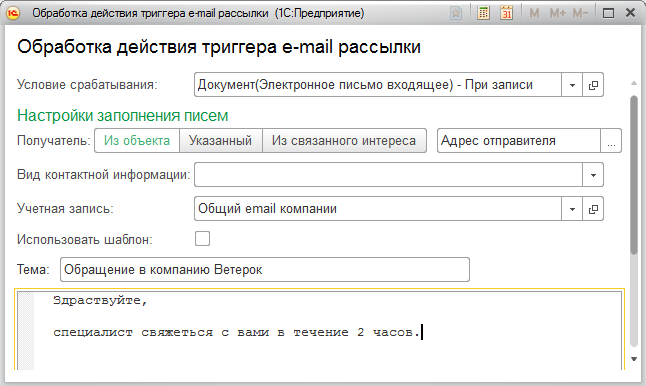

Примеры настройки механизма триггеров
В данном разделе описаны примеры настройки механизма триггеров для решения различных задач. Все описанные настройки выполняет администратором программы без привлечение программиста 1С.
Информирование менеджера о входящем e-mail по Интересу
Менеджер ведет переписку с клиентом по его Интересу используя общий почтовый ящик подразделения. При получении ответа от клиента необходимо информировать ответственного менеджера. Для реализации задачи:
1. Откройте список триггеров Настройки→ НСИ→ Триггеры и нажмите кнопку Создать. Заполните наименование триггера.
2. Выберите поставляемое в решении условие срабатывания При записи. входящего электронного письма (проверка связи с Интересом клиента).
3. Откройте настройки условия срабатывания. Заполните список учетных записей для которых будет проверяться условие.
Настройка условия срабатывания триггера
4. Выберите поставляемое в решении действие Создать напоминание и выполните его настройку, как показано на скриншоте ниже.
Настройка действия создания напоминания
5. Установите флаг Включен.
Настроенный триггер создает напоминание менеджеру при каждом получение ответа от клиента (если письмо клиенту было отправлено из формы документа Интерес клиента или перед отправкой письма в поле Интерес был выбран связанный Интерес клиента) .
Оповещение потенциального клиента о сроке ответа на его обращение по e-mail
При первом обращении клиента в нашу организацию нужно информировать его о сроках реакции на запрос, а также предоставлять дополнительную информацию. Для решения данной задачи нужно настроить триггер, для этого:
1. Откройте список триггеров Настройки→ НСИ→ Триггеры и нажмите кнопку Создать. Заполните наименование триггера.
2. Выберите поставляемое в решении условие срабатывания Получен e-mail от нового потенциального клиента.
3. Откройте настройки условия срабатывания. Заполните список учетных записей для которых будет проверяться условие.
Список учетных записей для которых будет проверяться условие
4. Выберите поставляемое действие Отправить E-mail и выполните его настройку, как показано на скриншоте ниже.Выберите поставляемое действие Отправить E-mail и выполните его настройку, как показано на скриншоте ниже.

Настройка действия для email-оповещения
5. Установите флаг Включен.
В результате работы триггера новые клиенты будут автоматически получать ответ на свой запрос по e-mail. Триггер при получение e-mail от клиента, если клиента нет в базе 1С, отправит ему e-mail со стандартным сроком ответа.
Уведомление клиента о поступление от него оплаты
Необходимо реализовать оповещение клиентов о поступление от него денежных средств.
Важно!
Настройка триггера описана для конфигурации 1С:CRM при использовании синхронизации данных с конфигураций 1С:Бухгалтерия 3.0.
Для решения задачи нужно создать и настроить новый триггер. Для этого:
1. Откройте список триггеров Настройки→ НСИ→ Триггеры и нажмите кнопку Создать. Заполните наименование триггера.
2. Создайте новое условие срабатывания с настройками:
o Тип объекта - Документ;
o Объект обработки - Коммерческое предложение клиенту;
o Событие - При записи.
Условие срабатывания триггера
3. Выберите созданное условие срабатывания триггера и выполните настройку срабатывания триггера:
o Нажмите кнопку Добавить новый элемент.
o В поле Отбор выберите Вид документа.
o В поле Вид сравнения выберите В списке.
o В поле Значение выберите значения Поступление безналичных денежных средств: расчеты с контрагентами и Приходный кассовый ордер: расчеты с контрагентами.
o Нажмите кнопку ОК.
o Нажмите кнопку Добавить новый элемент.
o В поле Отбор выберите Дата.
o В поле Вид сравнения выберите Больше или равно.
o В поле Значение выберите текущую дату.
o Нажмите кнопку ОК.
Настройка условия срабатывания триггера
4. Выберите действие триггера Отправить E-mail и выполните настройку действия триггера:
o Выберите режим выбора получателя Из счета на оплату.
o Выберите в поле Получатель значение Клиент.
o В поле Учетная запись выберите учетную запись электронной почты от имени которой будет выполняться отправка оповещения.
o Заполните текст оповещения. Оповещение может содержать специальный текст для подстановки номера счета, суммы и валюты оплаты: “%Номер счета на оплату%, %Дата счета на оплату %,%Сумма документа%, %Валюта документа%”.
Настройка действия триггера Отправить E-mail
5. Установите флаг Включен.
В результате работы триггера клиенты будут получать оповещение по e-mail о поступление денежных средств. Отправка оповещение будет выполняться автоматически в момент загрузки информации об оплате из 1С:Бухгалтерии в 1С:CRM.
Оповещение коммерческого директора о коммерческом предложения на сумму более <…>
Коммерческий директор контролирует все сделки с суммой более 1 миллиона. Требуются автоматически создавать напоминания для директора о всех новых коммерческих предложениях на сумму более 1 000 0000. Для реализации задачи нужно настроить триггер с новым простым условием срабатывания и действием Создать напоминание. Для этого:
1. Создайте новое условие срабатывания с настройками:
o Тип объекта - Документ;
o Объект обработки - Коммерческое предложение клиенту;
o Событие - При записи.
2. Откройте список триггеров Настройки→ НСИ→ Триггеры и нажмите кнопку Создать. Заполните наименование триггера..
3. Выберите созданное ранее условие срабатывания.
4. Откройте форму настроек условия и настройте условие срабатывания Сумма документа Больше или равно 1 000 000.
Настройка условия срабатывания
5. Выберите действие Создать напоминание и выполните его настройку. Заполните текст и получателя напоминания как показано на скриншоте ниже.
Настройка действия создания напоминания
Настроенный триггер создаст напоминание коммерческому директору при записи коммерческого предложения на сумму более 1 000 000.
Информационная рассылка для клиентов, зарегистрированных несколько дней назад
Необходимо настроить автоматическую маркетинговую рассылку для новых клиентов. Отправка маркетинговой информации должна выполняться после регистрации клиента в программе, через указанное количество дней.
Для решения данной задачи необходимо определить сегмент клиентов, в который будут попадать клиенты, зарегистрированные несколько дней назад (количество дней настраивается), и создать триггер, который будет выполнять рассылку клиентам, попавшим в данный сегмент.
Для того чтобы определить сегмент клиентов
1. Откройте список сегментов Настройки → Настройки системы → Маркетинг→ Классификация → Сегменты клиентов и нажмите кнопку Создать.
2. Нажмите кнопку Редактировать напротив поля Схема компоновки данных.
3. В новом окне
o В поле Схема компоновки данных выберите По дате регистрации (CRM).
o Перейдите на закладку Параметры и в поле Значение выберите количество дней, прошедших после регистрации.
o Нажмите кнопку Завершить редактирование.
4. Заполните поле Наименование и запишите данные.
Добавление и настройка нового сегмента
Для того чтобы настроить новый триггер
1. Откройте список триггеров Настройки→ НСИ→ Триггеры и нажмите кнопку Создать. Заполните наименование триггера.
2. Выберите поставляемое в решении условие срабатывания По расписанию.
3. Выберите поставляемое в решении действие Рассылка электронных писем клиентам в сегменте.
4. Нажмите команду Настроить параметры и заполните параметры, необходимые для работы триггера.
Настройка действия триггера
5. Заполните поле Наименование и нажмите команду Записать.
6. Настройте расписание срабатывания триггера. Для этого выберите команду Настроить расписание. В окне настройки расписания в поле Повторять каждые выберите значение 1.
7. Установите флаг Включен.
Описанный выше триггер раз в день создает документ Рассылка электронных писем и заполняет его контактами клиентов, попадающих в заданный сегмент.
Генерация повторных интересов клиентов на основании потерянных ранее интересов
Необходимо совершать повторный звонок тем клиентам, Интерес которых был потерян некоторое время назад (документ Интерес клиентов переведен в состояние Интерес потерян). Для автоматизации данной задачи нужно настроить триггер, который раз в день будет создавать новые документы Интересы клиентов на основании потерянных ранее Интересов клиентов .
Для того чтобы настроить новый триггер
1. Откройте список триггеров Настройки→ НСИ→ Триггеры и нажмите кнопку Создать. Заполните наименование триггера.
2. Выберите поставляемое в решении условие срабатывания По расписанию.
3. Выберите поставляемое в решении действие Восстановление интереса клиента.
4. Нажмите команду Настроить параметры и заполните параметры, необходимые для работы триггера
o Параметр Сколько дней назад интерес был потерян задает дату (за предшествующий период будут отбираться потерянные интересы).
o Можно уточнить причины потери интересов клиентов, для которых не нужно создавать новые интересы клиентов. Эта настройка необходима для того, чтобы иметь возможность прекратить генерацию новых интересов клиента в случае его повторного отказа.
o Параметры Вид взаимодействия и Что сделать задают вид взаимодействия, созданного в интересе клиента.
Настройка действия триггера
5. Заполните поле Наименование и нажмите кнопку Записать.
6. Настройте расписание срабатывания триггера. Для этого выберите команду Настроить расписание. В окне настройки расписания в поле Повторять каждые выберите значение 1.
7. Установите флаг Включен.
Настроенный триггер будет раз в день создавать новые интересы клиентов на основании потерянных ранее интересов клиентов.
Создание интереса клиента (лида) на основании письма-заявки
Необходимо настроить интеграцию программы с сайтом компании. На сайте реализована форма обратной связи. При заполнении клиентом данной формы на e-mail компании отправляется письмо, содержащее наименование компании клиента, ФИО контакта клиента, телефон и E-mail. При получение такого письма нужно создавать новый документ Интерес клиента.
Создадим и настроим триггер, который будет создавать новый Интерес клиента
1. Откройте список триггеров Настройки→ НСИ→ Триггеры и нажмите кнопку Создать. Заполните наименование триггера.
2. Создайте новое условие срабатывания с параметрами:
o Тип объекта - Документ;
o Объект обработки - Электронное письмо входящее;
o Событие - При записи.
Условие срабатывания триггера
3. Выберите созданное условие срабатывания триггера и выполните настройку его параметров:
o Нажмите кнопку Добавить новый элемент.
o В поле Отбор выберите Учетная запись.
o В поле Вид сравнения выберите В списке.
o В поле Значение выберите учетную запись электронной почты, на e-mail которой сайт отправит письмо.
o Нажмите кнопку ОК
Настройка условия срабатывания триггера
4. Выберите действие триггера Создание интереса клиента (лида) на основание письма-заявки и выполните настройку его параметров:
o В разделе Описание секций заявки укажите начало соответствующих строк письма. Например, письмо содержит строку “Наименование компании - ОСК - 2000”. В этом случае в поле Название организации нужно вписать текст “Наименование компании -”. Тогда часть строки правее указанного текста программа будет считать названием клиента.
o В секции Реквизиты документа интерес клиента укажите значения реквизитов для создаваемого автоматически интереса.
o В секции Описание взаимодействия укажите значения полей взаимодействия, созданного вместе с интересом клиента.
Настройка действия триггера
5. Установите флаг Включен.
Созданный триггер создает документ Интерес клиента на основании полученного письма-заявки следующего содержания:
Наименование компании - ОСК - 2000
ФИО - Отраднова Ирина Владимировна
Телефон - +7 (906) 991-83-84
E-mail - iren1984_84@mail.ru